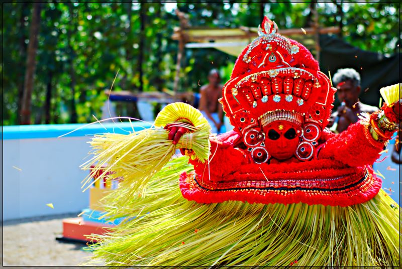

KANNUR :
Kannur district derived its name from the location of its headquarters at Kannur town.
The old name 'Cannanore' is the anglicised form of the Malayalam word Kannur.
According to one opinion, 'Kannur' is a derivation from Kanathur, an ancient village, the name of which survives even today in one of the wards of Kannur Municipality.
Another version is that Kannur might have assumed its name from one of the , deities of the Hindu pantheon, a compound of two words, Kannan (Lord Krishna) and Ur (place)making it the placeof Lord Krishna.
In this context, it is worth mentioning that the deity of the Katalayi Sreekrishna temple was originally installed in a shrine at Katalayi Kotta in the south eastern part of the present Kannur town.
 
HOME
NEXT